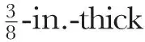
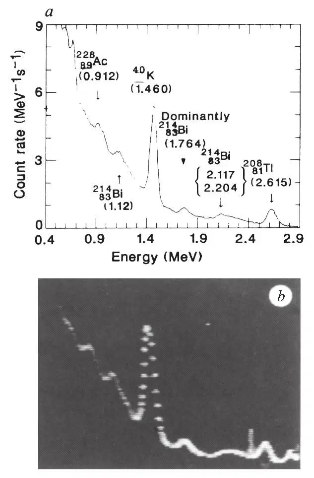
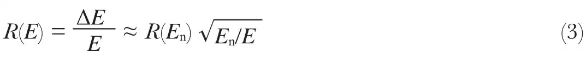
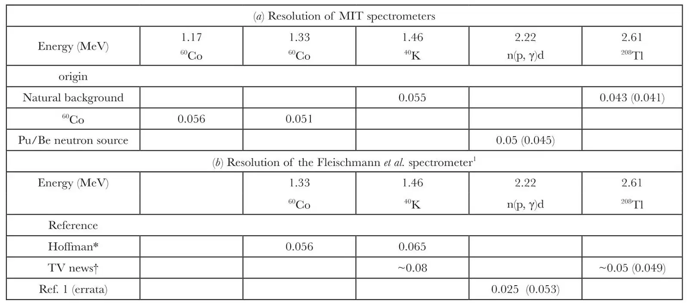
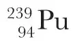
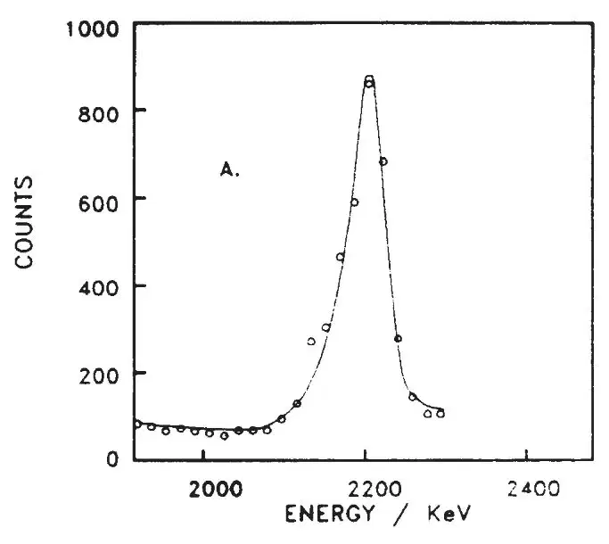
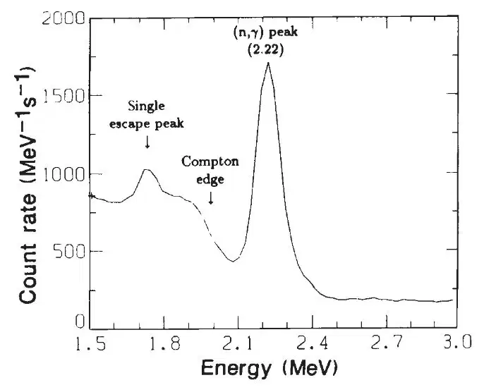
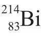

中文
中文R. D. Petrasso et al.
Editor’s Note
The claim by electrochemists Martin Fleischmann and Stanley Pons to have conducted “cold” nuclear fusion by electrolysis led to attempts worldwide to replicate the findings. Others focused on whether Fleischmann and Pons’ evidence supported their claims. A key argument was that they detected the neutrons and gamma-rays expected to be emitted, at well-defined energies, from the fusion reaction and its by-products. Here fusion expert Richard Petrasso of MIT and his colleagues investigate a gamma-ray spectrum shown on US television by Fleischmann and Pons (the only time they revealed it), and show that the alleged gamma-ray peak is in the wrong place. This challenge led to the first suspicions of fraud, rather than poor experimentation, in the cold-fusion claims. 中文
SIR—Fleischmann, Pons and Hawkins1 recently announced the observation of significant heating in their cold-fusion experiments, a result that they attribute to copious fusion reactions. As compelling evidence that fusion had occurred, they reported the observation of the 2.22-MeV γ-ray line that originates from neutron capture by hydrogen nuclei2,3
n + p → d + γ (2.22 MeV)
(1)
(Here d represents a deuteron.) They contend that the neutron in reaction (1) is generated by the reaction
d + d → n + 3He
(2)
and conclude, therefore, first that the 2.22-MeV γ-ray confirms that the fusion process (2) is occurring, and second that a neutron production rate of the order of 4×104 neutrons s–1 is derivable from their γ-ray signal rate. They further state that most of the heat generation occurs not through process (2), but through a hitherto unknown nuclear-fusion process. 中文
Here we focus solely on the identity of the reported γ-ray line, which we shall henceforth call the signal line. We argue that the claim of Fleischmann et al. to have observed the 2.22-MeV line characteristic of reaction (1) is unfounded. We do so on the basis of three quantitative considerations: (1) that the linewidth is a factor of two smaller than their instrumental resolution would allow; (2) that a clearly defined Compton edge4, which should be evident in their published data at 1.99 MeV, is not in fact present; and (3) that their estimated neutron production rate is too large by a factor of 50. In addition, from a consideration of the terrestrial γ-ray background, we argue that their purported γ-ray line actually resides at 2.5 MeV rather than 2.22 MeV. These conclusions are, in part, based on our studies of neutron capture by hydrogen, using a neutron source submerged in water. These measurements allow us to compare the results of Fleischmann et al. directly with a controlled experiment. 中文
We measured terrestrial γ-ray background spectra in order to compare our detector characteristics with those of Fleischmann et al. Figure 1a shows a typical terrestrial γ-ray background spectrum obtained with a 3 in. × 3 in. NaI(Tl) crystal spectrometer system (see ref. 5 for details). The main features of the background spectrum are quite similar throughout the terrestrial environment6,7. Fleischmann et al. showed a similar γ-ray spectrum on television (Fig. 1b). (We believe that we have viewed all the cold-fusion γ-ray spectra that have been shown on KSL-TV (Utah) up to 19 April. This information was obtained from Utah News Clips, Inc., Utah. As far as we can tell, all spectra are identical to that of Fig. 1b.) This spectrum was obtained in the course of the Fleischmann et al. experiments (M. Hawkins, personal communication). Their spectrometer system consisted of a Nuclear Data ND-6 portable analyser with a 3 in. × 3 in. NaI (Tl) crystal (ref. 1 and M. Hawkins and R. Hoffmann, personal communications). A

Pb annulus encompassed the scintillator. It is clear from Fig. 1a and b, and particularly from the 40K (1.46 MeV) and 208Tl (2.61 MeV) lines, that our resolution is comparable to or better than that of the spectrometer used by Fleischmann et al., a point to which we return later. 中文

Fig. 1. a, The γ-ray background spectrum measured with a 3 in.×3 in. NaI(Tl) detector at MIT. Some important terrestrial γ-ray lines have been identified in this figure6,7,12. (As explained in ref. 12, the immediate parent of the final decay product is identified. For example, 40K β+ decays into an excited nuclear state of 40Ar, which actually then emits the 1.460-MeV photon discussed in the text.) The spectrum is averaged over an 84-hour run. b, the γ-ray spectrum shown on television by Fleischmann et al. The main characteristics of the two spectra are similar; one can also tell that the two detectors have comparable spectral resolution. In b, note the curious structure at about 2.5 MeV and that beyond the 208Tl peak (2.61 MeV), which appear to be artefacts. (The spectrum can also be obtained from KSL-TV in Utah (M. Hawkins, personal communication).) 中文
In the interval 1.46–2.61 MeV, the energy resolution of a NaI(Tl) spectrometer, which determines the γ-ray linewidth, can be well described by the formula8,9

Here ΔE is the full width at half maximum (FWHM) of the line, E is the energy of the photon and R(En) is the measured “reference” resolution at energy En. R(En) can be accurately determined using a 60Co source (that is, the 60Co line at 1.33 MeV), or it can be fairly well approximated by the 40K decay line at 1.46 MeV. (From Fig. 1b, the 40K decay line allows one to estimate Fleischmann et al.’s resolution as ~8%.) Table 1 lists the resolution data for our detectors and for that of Fleischmann et al.. 中文
Table 1. Comparison of energy resolutions of the γ-ray spectrometers

The resolution is defined as the full width at half maximum (FWHM) divided by the peak energy. Numbers in parentheses are predicted values based on the detector resolution at 1.46 MeV (see text). In b, the prediction is based on the resolution value (0.065 at 1.46 MeV) provided by R. Hoffman (personal communication)
*R. Hoffman (personal communication).
† Derived from images of the televised news broadcasts. 中文
We now compare the signal line of Fleischmann et al. (Fig. 1a of ref. 1 (errata), shown as Fig. 2 here) with our measured spectrum obtained from the experiments on neutron capture by hydrogen (Fig. 3 here, and Fig. 4 of ref. 5). In these experiments, a Pu/Be eutron source was placed in a water tank.

emits energetic α-particles, which produce neutrons through (α, n) reactions with Be (refs 4,9). The neutrons are thermalized in water, and we observe the emitted neutron-capture γ-rays with our spectrometers. The measured resolution at 2.22 MeV is ~5% (Table 1a), and is reasonably well predicted by equation (3). As a consequence, this calls into immediate question the identity of Fleischmann et al.’s signal line as a γ-ray line. Specifically, Fig. 2 shows the signal line to have a resolution of 2.5%. This is about a factor of two smaller than that predicted by equation (3) on the basis of the known resolution (Table 1b) from either the 40K decay line (1.46 MeV) or from the 60Co source (1.33 MeV) (R. Hoffman, personal communication). But we know from Table 1 that the spectrometer used by Fleischmann et al. has a resolution that is at best comparable to our own for the entire region from 1.46 to 2.61 MeV (see also Fig.1), so it is inconsistent that their linewidth at 2.22 MeV is a factor of two below the predicted value. 中文

Fig. 2. A reproduction of the purported 2.22-MeV γ-ray signal line of Fleischmann et al. (Fig. 1a of errata to ref.1). The resolution, based on the linewidth, is about 2.5%. With such resolution, one would expect to see a clearly defined Compton edge at 1.99 MeV. No edge is evident. Also, a resolution of 2.5% is inconsistent with their spectral resolution. Furthermore, we argue that the signal line may reside at 2.5 MeV, not at 2.22 MeV as is claimed by Fleischmann et al. and depicted here. 中文
There is a second crucial inconsistency with the published signal line (Fig. 2). If we assume a resolution of 2.5% at 2.22 MeV, then there should be a clearly defined Compton edge4 at 1.99 MeV. For example, in Fig. 3 the Compton edge is evident even for our measured resolution of only 5%. For a resolution of 2.5%, the definition of the Compton edge would be distinctly sharper. The lack of a Compton edge at 1.99 MeV for the signal line therefore negates the conclusion of Fleischmann et al. that they have observed the 2.22-MeV γ-rays from neutron capture by hydrogen. 中文

Fig. 3. The γ-ray spectrum measured by a 3 in.×3 in. NaI(Tl) spectrometer during a neutron-capture-by-hydrogen experiment using a (Pu/Be) neutron source submerged in water. Because of the finite size of the crystal (which is identical to that of Fleischmann et al.1), we also see an escape peak2-4 and, of particular importance here, the Compton edge4. In this figure, the digitization energy width is 0.024 MeV per channel. The full Pu/Be and background spectra are shown in Fig. 4 of ref. 5. 中文
We also point out that in our (Pu/Be) neutron-capture experiments, a conspicuous e+–e– annihilation single-escape peak exists at 1.71 MeV (Fig. 3), as well as a double-escape peak at 1.20 MeV. (The full spectrum from the Pu/Be experiment, as well as the background spectrum, can be found in ref. 5.) Such features unambiguously identify the primary γ-rays as having an energy of 2.22 MeV, and are a necessary consequence of the physical processes of detection of γ-rays in a finite-sized NaI scintillator. 中文
Based independently on both their γ-ray and neutron measurements, Fleischmann et al. claim to have observed a neutron production rate of ~4×104 neutrons s–1 (ref. 1). This claim is clearly inconsistent with their γ-ray signal line, for the following quantitative reasons. The Pu/Be neutron source used in our experiment is absolutely calibrated to within 10% of 1.5×106 neutrons s–1 (ref. 10 and MIT Reactor Radiation Protection Office). In obtaining the data in Fig. 3, we used an experimental setup similar to that of Fleischmann et al. (ref. 1; televised broadcasts; and M. Hawkins and R. Hoffman, personal communications). Our Pu/Be source was submerged 6 in. into a large water tank. The rate at the 2.22-MeV peak, after subtracting the background continuum, is about 1.4×103 MeV–1 s–1 (see Fig. 3). Scaling this rate to a neutron source of 4×104 neutrons s–1 (the level given by Fleischmann et al.), and integrating over the linewidth, gives a total 2.22-MeV γ-ray rate of about 4.5 counts per second. This value is a factor of 50 times higher than the rate that would be calculated on the basis of the results in Fig. 1a (that is, 0.081 counts per second). (Fleischmann et al. state that their neutron count rate is measured with a BF3 neutron counter over a 0.4 mm×10 cm Pd cell, and that the γ-ray measurement is over a 0.8 mm×10 cm Pd cell1. If the total reaction rate is proportional to the volume of Pd rod, as they state, the inconsistency in the reported neutron rate is by a factor of 200 rather than 50.) While differences in rates of a factor of two might possibly be explained by geometrical considerations, a factor of 50 is inexplicable. 中文
A further point concerning the identification of the signal line is the precise value of the energy at which the peak occurred. From Fig. 2, the background in the neighbourhood of the peak is seen to be ~80 counts per channel, a level that corresponds to ~400 counts per channel for a 48-hour accumulation time (the data in Fig. 2 were accumulated for a period of 10 hours1). On the other hand, in the Utah measurements of terrestrial γ-ray background, the level in the vicinity of the 2.22-MeV feature was found to be ~4,000 counts per channel (R. Hoffman, personal communication). The only relevant part of the entire γ-ray spectrum (between 1.46 and 2.61 MeV) in which the background was as low as 400 counts was at an energy in the vicinity of 2.5 MeV (R. Hoffman, personal communication). Thus, we argue that the peak in the spectrum shown in Fig. 2 may be at 2.5 MeV, not at 2.22 MeV. 中文
The importance of properly identifying the energy of the feature claimed by Fleischmann et al. can hardly be overemphasized. Thus, it is extremely unfortunate that they chose to display only the energy range 1.9–2.3 MeV in their published Fig. 1a, thereby not providing the supporting evidence of the 40K (1.46-MeV) and 208Tl (2.61-MeV) features which must be present in their spectra in order for their identification to be correct. 中文
Therefore, although Fleischmann et al. may have observed a change in their γ-ray spectra that bears some relation to detector location, we conclude that it is unrelated to the 2.22-MeV neutron-capture γ-rays, and that it is also unrelated to the background

line (2.20 MeV; Fig. 1a), as has been suggested elsewhere11. We can offer no plausible explanation for the feature other than it is possibly an instrumental artefact, with no relation to a γ-ray interaction. 中文
(339, 183-185; 1989)
R. D. Petrasso, X. Chen, K. W. Wenzel, R. R. Parker, C. K. Li and C. Fiore
Plasma Fusion Center, Massachusetts Institute of Technology, Cambridge, Massachusetts 02139, USA
References:
1. Fleischmann, M., Pons, S. & Hawkins, M. J. electroanalyt. Chem. 261, 301-308 (1989); and errata.
2. Hamermesh, B. & Culp, R. J. Phys. Rev. 92, 211 (1953).
3. Greenwood, R. C. & Black, W. W. Phys. Lett. 6, 702 (1966).
4. Knoll, G. F. Radiation Detection and Measurements (Wiley, New York, 1979).
5. Petrasso, R. D. et al. MIT Plasma Fusion Center Report PFC/JA-89-24 Rev. (1989).
6. Eisenbud, M. Envir. Radioactivity (Academic, New York, 1973).
7. Adams, J. A. S. & Lowder, W. M. The Natural Radiation Environment (Univ. of Chicago Press, 1964).
8. Harshaw Radiation Detectors Scintillation Counting Principles, Solon, Ohio, 44139 (1984).
9. Crouthamel, C. E. Applied Gamma-Ray Spectrometry 2nd edn (eds Adam, F. & Dams, R.) (Pergamon, Oxford, 1970).
10. Reilly, W. F. thesis, Massachusetts Institute of Technology (1959).
11. Koonin, S. E., Bailey, D. C. Am. phys. Soc. Meet. Special Session on Cold Fusion, Baltimore, Maryland, 1-2 May (1989).
12. Lederer, M. C., Hollander, J. M. & Perlman, I. Table of Isotopes 6th edn (Wiley, New York, 1967).
Acknowledgements. We thank V. Kurz, J. S. Machuzak, F. F. McWilliams and Dr S. C. Luckhardt. For the use of a spectrometer system, we thank Professor G. W. Clark. For discussions, we thank M. Hawkins and R. Hoffman of the University of Utah. For suggestions and criticisms, we are grateful to Dr G. R. Ricker Jr and Professor D. J. Sigmar. We are indebted to J. K. Anderson for assembling this document. For locating important references, we thank K. A. Powers. Supported in part by the US Department of Energy.